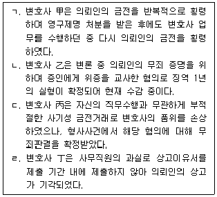
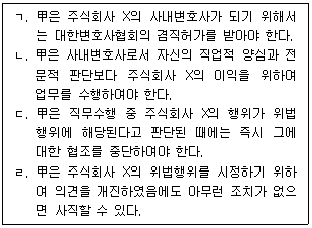
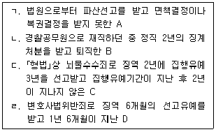
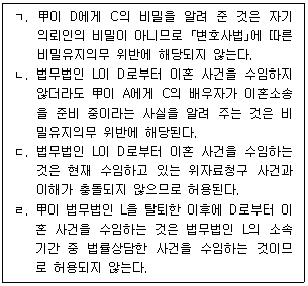
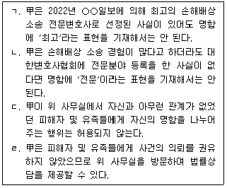
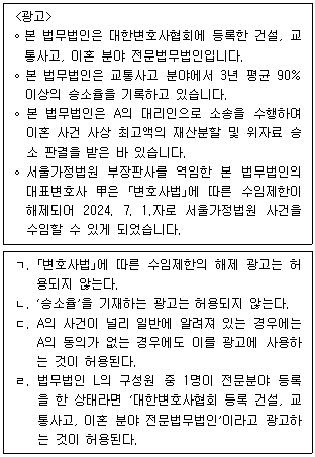
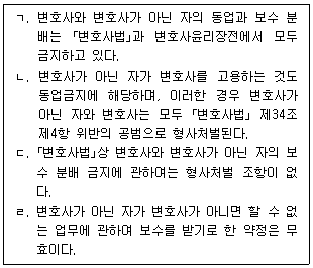
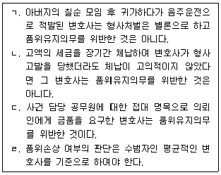

1과목: 임의 구분
1. 변호사의 징계에 관한 설명 중 옳은 것은?
2. ｢변호사법｣상 징계의 대상이 되는 변호사의 사례를 모두 고른 것은?

3. 외국법자문사에 관한 설명 중 옳은 것은?
4. 업무정지명령에 관한 설명 중 옳지 않은 것은?
5. ｢변호사법｣상 형사처벌의 대상이 아닌 행위는?
6. 개업 변호사 甲은 건설 및 토목 사업을 주된 업종으로 하는 주식회사 X의 사내변호사로 근무하고 있다. 甲은 회사의 업무를 처리하던 중 주식회사 X가 ｢독점규제 및 공정거래에 관한 법률｣을 위반하여 다른 건설회사들과 관급공사의 가격 담합을 시도하고 있다는 사실을 알게 되었다. 이에 관한 설명 중 옳은 것을 모두 고른 것은?

7. 법무법인, 법무법인(유한), 법무조합에 관한 설명 중 옳지 않은 것은?
8. 법관과 검사의 윤리에 관한 설명 중 옳지 않은 것은?
9. 법률사무소 사무직원으로 채용될 자격이 없는 사람을 모두 고른 것은?

10. 변리사의 법률사무에 관한 설명 중 옳지 않은 것은? (다툼이 있는 경우 판례에 의함)
11. 변호사의 비밀유지의무에 관한 설명 중 옳지 않은 것은?
12. 변호사 甲은 사기 혐의로 구속되어 수감 중인 A의 형사사건을 수임하였다. 이에 관한 설명 중 옳은 것은?
13. 법무법인 L은 A로부터 A의 법률상 배우자 B와 상간한 C를 상대로 한 위자료청구 사건을 수임하여 소송을 진행하고 있다. 법무법인 L 소속 구성원 변호사 甲은 D와 이혼 관련 법률상담을 하는 과정에서 C가 D의 법률상 배우자라는 사실을 알게 되었다. 이에 甲은 D에게 위 위자료청구의 소 제기 사실 등 직무상 알게 된 C의 비밀을 알려 주면서 이혼 사건의 의뢰를 권유하였다. 이에 관한 설명 중 옳은 것을 모두 고른 것은?

14. 변호사의 사건수임에 관한 설명 중 옳지 않은 것은?
15. 변호사의 공익활동에 관한 설명 중 옳지 않은 것은?
16. 변호사 甲의 광고 행위 중 ｢변호사법｣상 형사처벌의 대상이 되는 것은?
17. 변호사 甲은 A로부터 B를 상대로 한 1억 원의 부당이득반환청구 사건을 수임하면서 착수금 및 제1심에 대한 성공보수를 약정하였다. 甲과 A가 체결한 위임계약에는 甲은 B로부터 부당이득금을 반환받거나 공탁금을 수령하여 보관할 수 있고, A는 일부 승소 시에도 성공보수를 지급하기로 하는 내용이 포함되어 있다. 甲은 위임계약에 따라 B에 대하여 부당이득반환청구의 소를 제기하였다. 이에 관한 설명 중 옳지 않은 것은? (다툼이 있는 경우 판례에 의함)
18. 변호사 甲은 A로부터 주식회사 X를 상대로 한 제조물 책임 소송을 의뢰받았다. 甲은 A에게 사건의 승소 확률이 높지 않으니 소송비용을 甲이 부담하고 착수금을 받지 않는 대신에 승소로 확정된 판결 금액의 50%를 성공보수로 약정하자고 제안하였고, A도 이에 동의하여 위임계약이 체결되었다. 이에 관한 설명 중 옳지 않은 것은? (다툼이 있는 경우 판례에 의함)
19. 변호사 甲은 자신의 법률사무소 인근 지역에서 신축 중이던 아파트가 건설회사의 부실 공사로 인하여 붕괴되면서 다수의 피해자가 발생하였다는 방송을 보고 사건을 수임할 의사 없이 공익 목적으로 피해자 및 유족들을 돕기 위하여 그들이 결성한 비상대책위원회의 사무실을 방문하였다. 甲은 위 사무실에 있는 사람들에게 자신의 경력을 새긴 명함을 나누어 주고 무료로 법률상담을 해 주었지만 별도로 당해 사건의 의뢰 권유는 하지 않았다. 甲의 명함에는 “2022년 ○○일보 선정 최고의 손해배상 소송 전문변호사”라는 내용이 기재되어 있었다. 이에 관한 설명 중 옳은 것을 모두 고른 것은?

20. 변호사의 진실의무에 관한 설명 중 옳지 않은 것은? (다툼이 있는 경우 판례에 의함)
2과목: 임의 구분
21. 변호사의 개업·등록 등에 관한 설명 중 옳지 않은 것은?
22. 법무법인 L의 구성원 변호사 甲은 가상화폐 사기 사건으로 발생한 금전적 피해에 대해 집단소송 사건을 수임할 계획으로 피해자들을 위 사기 사건에 관한 소송의 원고로 모집하고자 한다. 이에 관한 甲의 광고 행위로 허용되는 것은?
23. 법무법인 L은 구성원 변호사 3명으로 설립·운영되고 있다. 법무법인 L의 구성원 변호사는 각각 건설, 교통사고, 이혼 분야 전문변호사로 대한변호사협회에 등록한 상태이다. 법무법인 L은 사건수임을 위하여 다음과 같은 내용의 광고를 하려고 한다. 이에 관한 설명 중 옳은 것을 모두 고른 것은?

24. 변호사의 보수 분배에 관한 설명 중 옳지 않은 것을 모두 고른 것은?

25. 변호사와 의뢰인의 관계에 관한 설명 중 옳지 않은 것은?
26. 변호사의 윤리에 관한 설명 중 옳지 않은 것은? (다툼이 있는 경우 판례에 의함)
27. 변호사의 윤리에 관한 설명 중 옳지 않은 것은?
28. 변호사의 품위유지의무에 관한 설명 중 옳지 않은 것을 모두 고른 것은? (다툼이 있는 경우 판례에 의함)

29. 법조윤리협의회에 관한 설명 중 옳지 않은 것은?
30. 수원지방검찰청에서 검사로 1년 10개월간 근무한 후 부산지방검찰청 동부지청에서 부장검사로 5개월간 근무하다가 퇴직한 변호사 甲은 퇴직과 동시에 주사무소가 서울에 있는 법무법인 L의 구성원 변호사로 근무하게 되었다. 甲은 현재 학교법인 A의 감사와 공무원으로 의제되는 진실·화해를 위한 과거사 정리위원회 비상임위원을 겸직하고 있다. 이에 관한 설명 중 옳은 것은?
31. 공직퇴임변호사에 관한 설명 중 옳지 않은 것은?
32. 변호사의 직무 및 법조인접직역에 관한 설명 중 옳은 것은? (다툼이 있는 경우 판례에 의함)
33. 변호사의 윤리에 관한 설명 중 옳지 않은 것은? (다툼이 있는 경우 판례에 의함)
34. 법무법인의 수임제한에 관한 설명 중 옳지 않은 것은?
35. 국선변호인에 관한 설명 중 옳지 않은 것은? (다툼이 있는 경우 판례에 의함)
36. 변호사의 수임제한에 관한 설명 중 옳지 않은 것은? (다툼이 있는 경우 판례에 의함)
37. 변호사의 쌍방대리금지에 관한 설명 중 옳지 않은 것은? (다툼이 있는 경우 판례에 의함)
38. 변호사의 수임에 관한 설명 중 옳지 않은 것은?
39. 변호사 甲과 변호사 乙은 변호사 업무수행 시 통일된 형태를 갖추고 비용을 분담하는 공동법률사무소를 운영하고 있다. 甲이 강도상해죄로 기소된 공동피고인 A와 B의 변호인으로 선임되었을 때 이에 관한 설명 중 옳은 것은?
40. 변호사의 이익충돌회피의무에 관한 설명 중 옳지 않은 것은? (다툼이 있는 경우 판례에 의함)